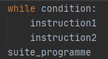
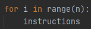
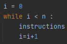
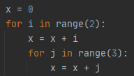
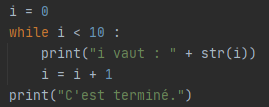
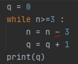
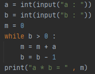
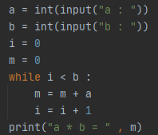
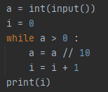

La notion de boucle est fondamentale en informatique. Une boucle permet d'exécuter plusieurs fois des instructions qui ne sont présentes qu'une seule fois dans le code.
La structure de la boucle conditionnelle est la suivante :
Tant que l'expression s'évalue à True, les instructions à l'intérieur du bloc (partie indentée) seront exécutées.
La boucle non conditionnelle permet de répéter n fois, n étant connu, une instruction ou un bloc d’instructions. Sa syntaxe est la suivante :
Ce code peut être remplacé par le code :
Voici un script :

Quelle est la valeur finale de x ?
Voici un script :
Quelle est la valeur finale de x ?
Soit le programme suivant :
Quel est le résultat attendu après l'exécution de ce programme ? Vérifiez votre réponse en testant le programme.
Correction: Le résultat renvoyé est : i vaut : 0 i vaut : 1 ... i vaut : 9 C'est terminé.
Créez "un générateur automatique de punition".
Écrire une fonction qui prendra 2 paramètres : une chaîne de caractère et un nombre entier
Par exemple :
Si on passe comme paramètres à notre fonction : "Je ne dois pas discuter en classe" et 3, la fonction devra permettre d'afficher :
Je ne dois pas discuter en classe
Je ne dois pas discuter en classe
Je ne dois pas discuter en classe
Écrire une fonction permettant d'afficher une table de multiplication. Cette fonction devra prendre en paramètre la table désirée.
Ecrire une fonction qui prend en argument un entier positif et renvoie son nombre de chiffres.
Ecrire une fonction qui prend en argument un entier naturel en base 10 et qui renvoie l’écriture de cet entier en base 2.
Ecrire une fonction qui prend en argument un nombre écrit en base 2 et qui renvoie l’écriture de cet entier en base 10.
Python propose un certain nombre d’instructions primitives comme print et input .
Le langage contient également de bibliothèques qui apportent des collections d’instructions plus spécialisées qui permettent d’effectuer de nouvelles taches.
Par exemple, il existe une bibliothèque random donnant accès à différentes instructions produisant des nombres aléatoires. Elle offre en particulier une instruction randint pouvant être utilisée sous la forme random.randint(1,6) pour tir au hasard un nombre entier entre 1 et 6 inclus ou encore une instruction random pouvant être utilisée sous la forme random.random() pour tirer au hasard un nombre décimal entre 0 inclus et 1 exclu.
L’utilisation de telles instructions nécessite la déclaration préalable, faite en début de programme : import random
On peut aussi spécifiquement charger une ou plusieurs instructions de la façon suivante : from random import randint
On appellera alors randint de la façon suivante : randint(1,6)
Créer un programme qui permette de jouer au jeu « devine le nombre ».
L’ordinateur choisit un nombre mystère, puis l’utilisateur propose à chaque tour un nombre jusqu’à ce qu’il trouve le nombre mystère. L’ordinateur lui répond « C’est plus », « C’est moins » ou « Gagné ».
L’instruction break est une instruction spéciale qui ne peut être écrite que dans une boucle. Elle provoque l’arrêt immédiat de la boucle.
Ecrire un programme qui demande à l’utilisateur d’entrer un nombre positif jusqu’à ce qu’il en entre un.
Attention : le compteur d’une boucle for existe toujours après l’exécution de la boucle en Python.
Ce n’est pas vrai dans tous les langages.
On recommande de ne plus utiliser cette variable après la boucle, sauf comme compteur d’une autre boucle.
Terminaison et méthode du variant dans une boucle while:
L’arrêt des itérations d’une boucle while étant conditionné à un échec, elles peuvent se poursuivre indéfiniment si la condition est toujours vérifiée.
On parle alors de divergence, de non terminaison, d’un programme qui boucle ou encore d’un programme qui part en boucle infinie.
Cela peut être obtenu de manière volontaire ou être causé par des erreurs de programmation.
Pour éviter ce dernier cas, il devient utile de réfléchir à la terminaison du programme en s’assurant que les conditions menant à l’arrêt de la boucle finiront par être vérifiées.
Soit le programme suivant :
Justifier que ce programme termine.
Correction: La valeur de n décroit de 3 à chaque tour de boucle, donc n deviendra forcément inférieur ou égal à 3.
La technique de raisonnement utilisée au-dessus s’appelle la technique du variant.
Elle consiste à trouver parmi les éléments du programme une quantité qui est entière et positive et qui décroit strictement à chaque tour de boucle, qu’on appelle le variant de boucle.
On prétend que chacun des deux programmes suivants, après avoir demandé deux nombres entiers positifs a et b à l’utilisateur, effectue la multiplication de a par b.
 Ces programmes terminent-ils ? Identifier pour chacun un variant de boucle.
On prétend que chacun des deux programmes suivants calcule le nombre de chiffres d’un nombre positif saisi par l’utilisateur.

Justifier qu’ils terminent avec la technique du variant.
Correction: Premier programme : i ne varie pas et a est divisé par 10 à chaque tour de boucle et i <= a, donc le programme se termine. Deuxième programme : a ne varie pas et k est multiplié par 10 à chaque tour de boucle et k <= a, donc le programme se termine.
Que se passe-t-il si on remplace a > 0 par a != 0 dans le premier programme ?
Correction: Cela ne change rien.
Et si on remplace k < a + 1 par k != a + 1 dans le deuxième ?
Correction: Il ne faut pas que k > a + 1 mais c'est impossible si on choisit un nombre positif.